8 Erstspracherwerbsstadien
- Welche typischen Stadien sind im Erstspracherwerb unterscheidbar? (–> Vgl. Quarks&Co, Kauschke, Rainer Dietrich 2016)
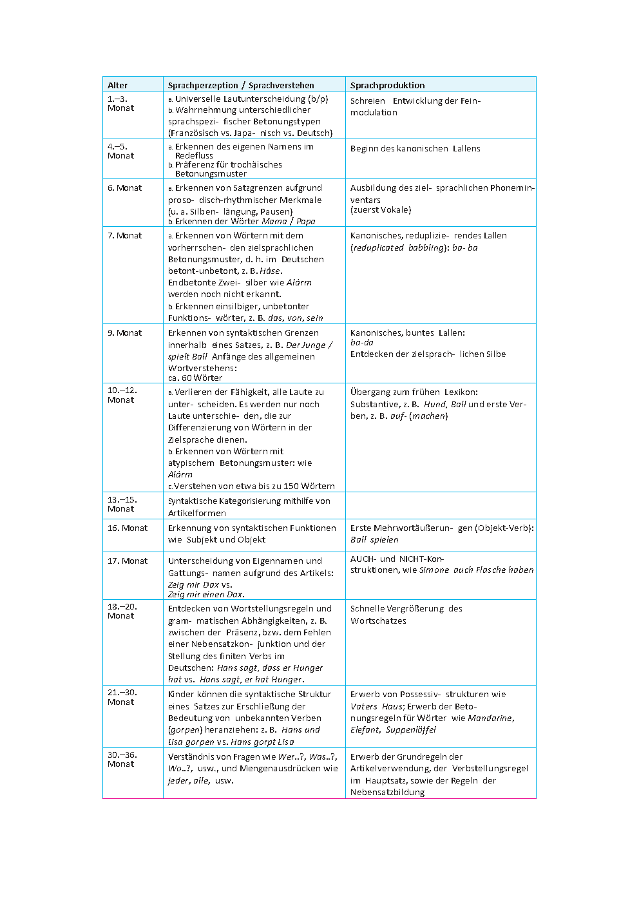
8.1 Frühe Sprachwahrnehmung
Gemäß Kauschke (2012) sind Säuglinge Von Geburt an in der Lage, spezifische Eigenschaften der Umgebungssprache wahrzunehmen, zu unterscheiden und allmählich für den Aufbau sprachlichen Wissens zu nutzen.
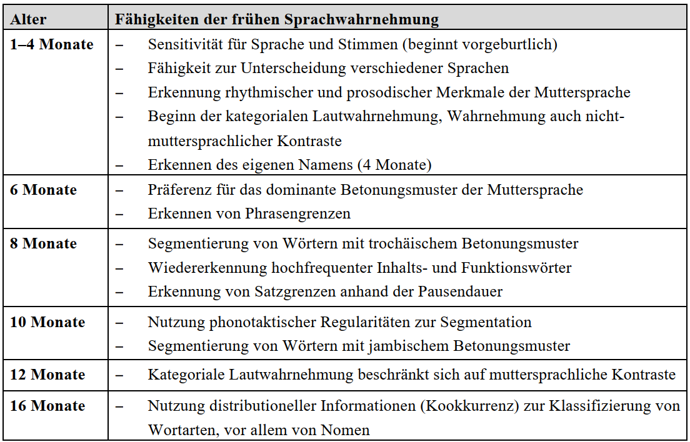
Die Entwicklung der Fähigkeiten beginnt bereits vor der Geburt, denn bereits wenige Tage alte Kinder zeigen eine besondere Hinwendung zu sprachlichen Reizen. Nuckelexperimente belegten, dass Neugeborene menschliche Stimmen gegenüber anderen akustischen Reizen (z.B. Geräuschen oder Musik) und die Stimme der Mutter gegenüber anderen Stimmen bevorzugen (DeCasper & Fifer 1980).
8.1.1 Kategoriale Lautwahrnehmung
Gemäß Kauschke (2012) sind Säuglinge fähig, Unterschiede zwischen einzelnen Lauten wahrzunehmen. Die so genannte kategoriale Lautwahrnehmung ist bereits im ersten Monat ausgeprägt und im Verlauf der Entwicklung durch eine allmähliche Abnahme der Differenzierungsfähigkeit für nicht-muttersprachliche Kontraste gekennzeichnet (Tees 1984).
Mit dem Begriff der kategorialen Lautwahrnehmung wird darauf verwiesen, dass kontinuierliche akustische Signale von Hörern in abgegrenzte Lautkategorien unterteilt werden.
Beispielsweise wird ab einem bestimmten Grad der Stimmhaftigkeit des Anlauts ein /ba/ statt eines /pa/ wahrgenommen.
Beispiel Eimas und Kollegen (1971, 1974) präsentierten Säuglingen einen bestimmten Plosiv, bis durch die Abnahme der Saugrate eine Gewöhnung angezeigt wurde. Daraufhin wurde der zweite Laut eingespielt und gemessen, ob bzw. in welchem Ausmaß es zu einer Veränderung der Saugrate kam. Kinder zwischen einem und vier Monaten konnten stimmhafte und stimmlose Laute sowie Laute mit verschiedenen Artikulationsorten (/d/ versus /ɡ/) kategorial unterscheiden.
Für die Differenzierung von Frikativen benötigen sie etwas länger.
Die Fähigkeit zur kategorialen Lautwahrnehmung bedeutet, dass Säuglinge phonetische Unterschiede innerhalb einer Phonemkategorie ignorieren, aber Übergänge von einem Phonem zu einem anderen wahrnehmen, auch wenn die phonetischen Unterschiede gering sind.
Interessant ist, dass sie sogar lautliche Kontraste unterscheiden können, die in der eigenen Muttersprache keine bedeutungsunterscheidende Funktion einnehmen, während diese Fähigkeit bei Erwachsenen nicht mehr zu beobachten ist. Erwachsene erkennen nur die Kontraste, die für ihre Sprache relevant sind.
Beispiel: Im Gegensatz zu japanischen Säuglingen fehlt erwachsenen japanischen Sprechern die Differenzierungsfähigkeit zwischen den Phonemen /l/ und /r/, denn diesem Kontrast kommt im Japanischen keine bedeutungsunterscheidende Funktion zu.
Gegen Ende des ersten Lebensjahres vollzieht sich eine Entwicklung von der universellen zur einzelsprachlich beeinflussten Wahrnehmung (Höhle 2004: 4).
8.1.2 Segmentation
Gemäß Kauschke (2012) ist die Segmentation, also die Zerlegung des kontinuierlichen Sprachstroms in einzelne Einheitenein weiterer wesentlicher Schritt, der den Spracherwerb einleitet und ermöglicht. Auch diese Fähigkeit, die notwendig zum Erkennen von Wortgrenzen und damit zum Aufbau der grundlegenden Einheiten der Sprache ist, entwickelt sich im ersten Lebensjahr (für einen Überblick siehe Jusczyk 1999, Höhle 2004).
Die Erwerbsaufgabe der Wortsegmentation ist keineswegs trivial, wenn man bedenkt, dass Anfang und Ende von Wörtern in der gesprochenen Sprache nicht explizit durch Pausen oder andere klare Grenzsignale markiert werden. Die Anforderung an das Kind lässt sich durch die Analogie mit einem erwachsenen Sprecher verdeutlichen, der erstmals eine gänzlich unbekannte Fremdsprache hört und zunächst nicht in der Lage ist, dem Input Sinneinheiten zu entnehmen (vgl. Höhle 2005).
Das Segmentieren des kontinuierlichen Lautstroms und das Extrahieren von zusammengehörigen Einheiten aus diesem ist eine notwendige Voraussetzung für das Wortlernen, bei dem das Kind zuvor isolierte und gespeicherte lautliche Einheiten mit Bedeutungen in Verbindung bringen muss.
Um Grenzen im Sprachstrom zu setzen und Wörter als feste Einheiten zu erkennen, beachtet das Kind unterschiedliche Hinweisreize, die der Input bietet, wobei prosodische Informationen auch hier zunächst im Vordergrund stehen. Kinder nutzen vor allem rhythmische Merkmale zur Gliederung akustischer Signale.
Ab sechs Monaten präferieren sie das dominante Betonungsmuster der Muttersprache und gelangen so zu einem ersten Anhaltspunkt über mögliche Wortgrenzen. Im Deutschen ist das vorherrschende Wortbetonungsmuster der Trochäus, d.h. eine Abfolge mit einer betonten und einer unbetonten Silbe.
Das Erkennen der muttersprachlichen Wortbetonung bietet eine Hilfestellung dahingehend, dass das Kind nun annehmen kann, dass Wörter in der Regel mit betonten Silben beginnen und eine Wortgrenze daher vor einer betonten Silbe liegen muss. Diese metrische Strategie erlaubt einen effektiven Einstieg in die Wortsegmentation, würde aber zu Fehlinterpretationen führen (z.B. bei Wörtern mit vom Trochäus abweichenden Betonungsmustern), wenn sie ausschließlich die Wahrnehmung leitete.
Weitere, mit etwa neun Monaten genutzte Informationsquellen für die Segmentierung sind phonotaktische Regularitäten.
Kinder sind in dieser Phase sensitiv dafür, dass nur bestimmte Konsonantenfolgen innerhalb eines Wortes, z.B. als wortinitiales Konsonantencluster, erlaubt sind. Treten davon abweichende Konsonantenfolgen im Sprachstrom auf, wie z.B. /tk/, so spricht dies für eine Wortgrenze zwischen diesen Segmenten (wie z.B. in der Wortfolge ›geht Karl‹, Beispiel aus Pelzer 2011).
Ähnliche Informationen liefern allophonische Varianten von Phonemen. Im Deutschen kann beispielsweise der [ç]-Laut wortinitial nicht in der allophonischen Variante des [x] auftreten, sodass vor [x] keine Wortgrenze angenommen werden kann. Somit ist die distributionelle Analyse des sprachlichen Inputs ein weiteres Mittel, das zur Segmentierung genutzt werden kann.
Experimente mit der Methode des Kopfdrehparadigmas erbrachten darüber hinaus den Nachweis, dass Kinder mit sieben bis acht Monaten vorgegebene Inhalts- und hochfrequente Funktionswörter wiedererkennen.
Wurden Kinder eingangs mit einem Nomen wie ›Pinsel‹ oder einer Präposition wie ›bis‹ familiarisiert, so orientierten sie sich später länger zu Texten hin, die dieses Wort enthielten (Höhle & Weissenborn 2003, Höhle 2005). Dies zeigt eindrücklich, dass sie die Wörter mental speichern und in einem kontinuierlichen Input wiederentdecken konnten.
Die Speicherung hochfrequenter Wörter kann wiederum als Segmentierungshilfe dienen: Erkennt das Kind im Sprachstrom ein bereits vertrautes und häufig vorkommendes Wort wieder (unabhängig davon, ob ihm die Bedeutung bekannt ist), so kann es vor und nach diesem Wort eine Wortgrenze annehmen.
Auch der eigene Name, den Kinder mit etwa vier Monaten wiedererkennen, kann als ein solcher »Ankerpunkt« dienen (Höhle 2004, Bortfeld et al. 2005).
Nachdem zunächst die rhythmisch-metrische Segmentierungsstrategie vorherrscht und die Prosodie damit im Sinne des prosodischen bootstrappings den Einstieg in die Sprachverarbeitung ermöglicht, lernt das Kind in der zweiten Hälfte des ersten Lebensjahres, verschiedene Informationstypen zu integrieren.
Zwischen sieben und elf Monaten schreitet die Fähigkeit, vielfältige Hinweise aus dem Input zur erfolgreichen Wortsegmentation zu nutzen voran, so dass am Ende dieser Entwicklungsphase auch Wörter mit einem für die Muttersprache untypischen Betonungsmuster erkannt werden (Jusczyk 1999).
Eine weitere Segmentationsleistung über das Worterkennen hinaus ist das Erkennen von größeren syntaktischen Einheiten. Für den Grammatikerwerb ist es grundlegend, wichtige strukturelle Einheiten wie Phrasen und Sätze als zusammengehörig wahrzunehmen.
Innerhalb dieser Domänen werden grammatische Beziehungen wie z.B. Subjekt-Verb-Kongruenz realisiert, die für die Interpretation eines Satzes von großer Bedeutung sind. Die Grenzen dieser Einheiten sind oft durch prosodische Merkmale wie Pausen, Vokallängung oder Veränderungen der Stimmfrequenz gekennzeichnet.
Kinder mit unterschiedlichen Muttersprachen präferieren im Alter von sieben bis zehn Monaten Texte mit natürlichen Pausen an den Satzgrenzen gegenüber Texten, die künstliche, unsinnige Pausen enthalten (Hirsh-Pasek et al. 1987).
Schmitz (2009) untersuchte mit dem Kopfdrehparadigma, ob auch Deutsch lernende Kinder sensitiv gegenüber der Pausendauer sind und das Vorkommen von Pausen als Hinweis auf eine Satzgrenze nutzen. Dazu wurden Satzblöcke mit unterschiedlich langen Pausen vorgespielt, wobei die Pausen entweder in natürlicher Form zwischen den Sätzen oder aber mitten in einer Phrase auftraten. Es zeigte sich, dass sechs Monate alte Kinder zwischen beiden Bedingungen unterscheiden konnten, also bereits Wissen darüber aufgebaut haben, an welcher Stelle Pausen adäquat sind. Auch die angemessene Dauer von Pausen wurde wahrgenommen, denn acht Monate alte Kinder bevorzugten Sätze, in denen die Pause zwischen zwei Teilsätzen etwas kürzer war als die zwischen zwei eigenständigen Sätzen, gegenüber Sätzen mit einer umgekehrten und damit unnatürlichen Abstufung der Pausenlänge. Daraus kann gefolgert werden, dass Kinder in diesem Alter eine »natürliche Pausenhierarchie« (Schmitz 2009: 34) entdeckt haben, die ihnen helfen kann, syntaktisch relevante Einheiten zu erkennen.
8.1.3 Weitere phonologische Entwicklung
8.1.3.1 Laut- und Phoneminventar
Gemäß Kauschke (2012): 34 sind folgende Beobachtungen gemacht worden:
Da Wortformen in der frühen Phase ganzheitlich als holistische Lautgestalten gespeichert werden, erscheinen die Phoneme anfangs undeutlich und unklar, die suprasegmentalen Eigenschaften für das ganze Wort klingen jedoch zielsprachlich. Es kann auch vorkommen, dass einzelne Wörter als ganze Gestalt oder »artikulatorische Geste« reproduziert werden und bereits der korrekten Form der Zielsprache entsprechen, obwohl sie in der folgenden Phase der segmentorientierten Verarbeitung wieder vereinfacht werden. Dieser vermeintliche Rückschritt zeigt einen Umschwung in der Art der phonologischen Repräsentationen an.
Das anfänglich noch eingeschränke Inventar an Lauten wird allmählich erweitert.
Wie sich dies im Deutschen vollzieht, zeigen Studien von Fox-Boyer (Fox-Boyer 2009, siehe auch Fox & Dodd 1999), in denen Kinder verschiedener Altersstufen aufgefordert wurden, Bilder zu benennen. Die Produktionen der Kinder wurden aufgezeichnet und anschließend transkribiert und bewertet. Auf diese Weise wurde festgestellt, welche Laute im Inventar der Kinder enthalten waren und in welcher Reihenfolge phonologische Prozesse überwunden wurden.
In Bezug auf das Lautinventar wurden das phonetische und das phonemische Inventar unterschieden. Als phonetisch erworben galt ein Laut, wenn die Mehrzahl der Kinder diesen korrekt artikulieren konnte, unabhängig davon, ob der Laut in diesem Kontext funktional angemessen ist (hier wäre das Auftreten von /t/ im Wort ›Tuh‹ statt ›Kuh‹ ein Beleg für die Fähigkeit, den Laut /t/ phonetisch zu realisieren).
Beim phonemischen Inventar hingegen mussten die Kinder den Laut korrekt in seinem jeweiligen Wortkontext anwenden (z.B. /k/ in ›Kuh‹). Nach dem Kriterium, dass 90% der untersuchten Kinder die Laute erworben haben müssen, ergibt sich folgende Erwerbsreihenfolge für die Vervollständigung des Lautinventars im Deutschen:
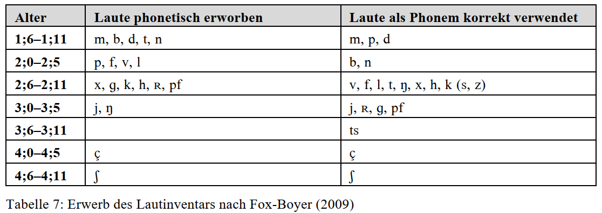
Je mehr Laute produziert werden können, umso besser können phonologische Prozesse überwunden werden.
8.1.3.2 Phonologische Prozesse
In Kauschke (2012): 35 sind folgende Erläuterungen zu finden:
In einem Reorganisationsprozess, der mit etwa 18 Monaten beginnt, weicht die anfänglich holistische Speicherung von Wörtern einer segmentorientierten Verarbeitung.
Erkennbar ist dies an systematischen Vereinfachungsprozessen, die als regelhafte Abweichungen von den zielsprachlichen Wortformen zu beschreiben sind. Die Vereinfachungen der Zielsprache lassen sich systematisch erfassen und mit Hilfe so genannter phonologischer Prozesse klassifizieren (siehe Tabelle 8). Grob gesagt bestehen phonologische Prozesse darin, dass die korrekte Wortform durch Auslassung oder Ersetzung von Lauten modifiziert wird.
Bei Strukturprozessen wird die gesamte Struktur eines Wortes verändert, indem z.B. Silben ausgelassen werden; oder die Silbenstruktur wird durch Auslassung oder Hinzufügung von Lauten modifiziert.
Bei Substitutionsprozessen werden Laute durch andere ersetzt.
Wird durch die Lautersetzung eine Angleichung der Lautmerkmale innerhalb eines Wortes herbeigeführt, spricht man von Harmonisierungs- oder Assimilationsprozessen.
Zu beachten ist, dass phonologische Prozesse hier als Mittel der Beschreibung zu verstehen sind, mit deren Hilfe die beobachtbaren, regelhaften Unterschiede zwischen kindlichen und zielsprachgemäßen Wortformen verdeutlicht und systematisiert werden können (Rothweiler 2002: 261).
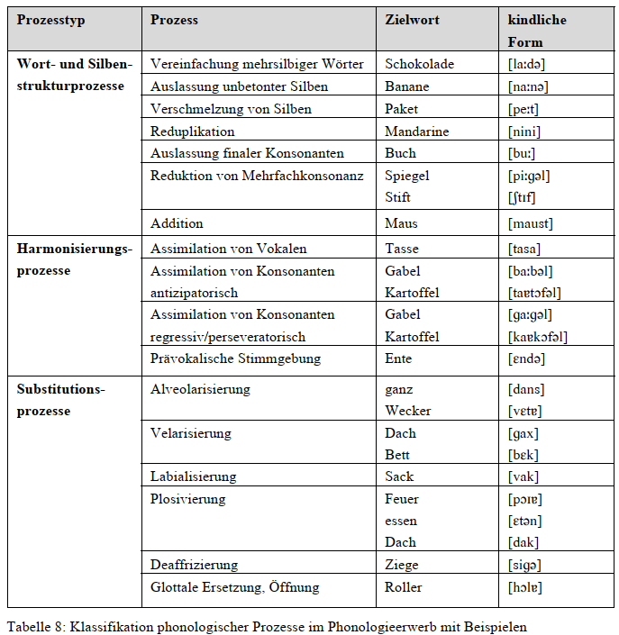
In der erwähnten Studie von Fox-Boyer (2009) ergab sich folgende Reihenfolge für die Überwindung phonologischer Prozesse, wobei hier nur typische Prozesse berücksichtigt wurden, die in der jeweiligen Altersstufe bei mindestens 10% aller Kinder auftraten (siehe Tabelle 9).
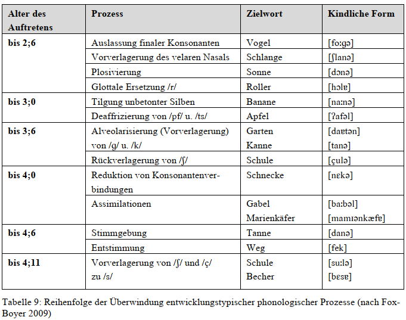
Phonologische Prozesse zeigen an, dass Abweichungen von der Zielsprache in der Aussprache von Kindern nicht zufällig sind, sondern einem System folgen (z.B. Vorverlagerung der Velare oder Plosivierung von Frikativen).
Die Phase der Inkonsequenz wird in der zweiten Hälfte des dritten Lebensjahres überwunden (Schäfer & Fox 2006), die Wortformen werden danach stabiler und konsistenter, auch wenn sie noch von zielsprachlichen Formen abweichen.
Diese allmähliche Überwindung der phonologischen Vereinfachungsprozesse bedeutet, dass das phonologische System mehr und mehr zielsprachlich organisiert wird und die notwendigen distinktiven Merkmale berücksichtigt werden.
8.1.4 Lexikalische Entwicklung
Der Erwerb eines Wortes in seiner Gesamtheit erfordert die aufeinander bezogene Speicherung von phonologischen, syntaktischen, morphologischen, semantischen und pragmatischen Informationen. (Kauschke 2012:)
Da der Übergang von der frühen Phase zur darauf folgenden zeitlich mit der Entwicklung syntaktischen Wissens einhergeht, hat man die beiden Phasen bezeichnet als:
- vorsyntaktische (lexikalische, prämorphologische, ca. vor 18. Lebensmonat) und
- syntaktische Phase des Wortschatzerwerbs (ca. ab 18. Lebensmonat). (Dietrich 2016: 79)
8.1.4.1 Wortverständnis
In den letzten Monaten des ersten Lebensjahres setzt das Wortverständnis in diesem Sinne ein, nun erkennt das Kind nicht mehr nur die Wortform wieder, sondern es verknüpft sie mit Bedeutung. (Kauschke 2012:)
Bates et al. (1995) stellten durch Elternbefragungsmethoden fest, dass Kinder mit acht Monaten 36 Wörter und mit 16 Monaten bereits 190 Wörter verstanden, wobei die individuelle Varianz recht groß war (mit 16 Monaten Spannweite 78 bis 303 Wörter).
Der rezeptive Wortschatz von sechsjährigen Kindern wird auf 9000 bis 14000 Wörter geschätzt. Diese quantitative Entwicklung des rezeptiven Vokabulars zeugt für die beachtliche Fähigkeit von Kindern, schnell und effektiv eine wachsende Vokabularmenge zu erwerben. (Kauschke 2012:)
Für die Fähigkeit, neue Wörter schnell mit Bedeutungen zu koppeln, auch wenn der Bedeutungsgehalt noch nicht voll ausdifferenziert ist, führte Carey (1978) die Bezeichnung fast mapping ein. Dieser wirksame Mechanismus ermöglicht, dass Kinder sofort nach möglichen Bedeutungen suchen, wenn sie auf eine neue Wortform treffen. Sie legen dann einen ersten, rudimentären Lexikoneintrag an, der im Laufe der Zeit weiter ausdifferenziert und durch weitere Informationen angereichert wird. (Kauschke 2012:)
Im Wortschatzerwerb bezeichnet fast mapping die Anwendung einer speziellen Aufnahmestrategie, die darin besteht, teilweise unvollständige lautliche Informationen mit teilweise unvollständigen Bedeutungsvorstellungen zu assoziieren und im mentalen Lexikon zu speichern. (Dietrich 2016: 83)
Entscheidend sind die Gedächtnisfunktionen. Das Kind muss ein in seiner Umgebung wiederkehrendes lautliches Gebilde so gespeichert haben, dass es dieses in wechselnden Ausprägungen erkennt, mit einer konstanten nichtlautlichen Vorstellung von seiner Verwendungsbedingung (Situation, Ereignistyp, Sache, Situationsmerkmalen) assoziiert und schließlich auch artikulieren kann. (Dietrich 2016: 79)
Soweit es Letzteres nicht kann, ist die lexikalische Einheit eben noch nicht aktiv, sondern nur passiv beherrscht. Alle Beobachtungen sprechen dafür, dass die passive Beherrschung der aktiven zeitlich deutlich vorausgeht. (Dietrich 2016: 79)
Für die hier geschilderten Prozesse spielen natürlich auch Gedächtnisfähigkeiten eine Rolle. Bevor Informationen ins Langzeitgedächtnis gelangen, werden sie im Arbeitsgedächtnis, auch Kurzzeitgedächtnis genannt (Schwarz 2008: 102f), zwischengespeichert. (Kauschke 2012:)
Bezogen auf das Wortlernen bedeutet dies, dass dem phonologischen Kurzzeitgedächtnis eine große Bedeutung für den Wortschatzerwerb zukommt, denn Wortformen müssen hier zunächst verarbeitet werden, bevor sie in das mentale Lexikon, d.h. in den Langzeitspeicher für Wörter, eingehen (zur Rolle des phonologischen Gedächtnisses für den Lexikonerwerb siehe auch Rothweiler 2001 und Weinert 2004). Das phonologische Arbeitsgedächtnis stellt damit einerseits eine Voraussetzung für den Erwerb und die Speicherung von Wortformen dar, wird aber andererseits selbst durch zunehmendes Sprachwissen beeinflusst. So zeigt Weinert (2004), dass die Arbeitsgedächtnisleistung sechsjähriger Kinder durch den Wortschatzumfang mit fünf Jahren vorhergesagt werden kann. (Kauschke 2012:)
Die mit dem Lautgebilde assoziierte Vorstellung ist mit der Zielbedeutung nicht gleichzusetzen.
Überdehnung (Spezialfall der Übergeneralisierung): Mit einem Namen kann sich mehr als die Vorstellung der Person verbinden, die ihn trägt,
- z. B. eine typische Handlung, eine typische Situation; mit einem Wort wie heiß kann sich die Erfahrung des Wehtuns verbinden, das Verbot, heiße Ding zu berühren oder der Anblick einer offenen Feuerstelle.
Unterdehnung: häufiger, aber schwerer nachzuweisen. (Dietrich 2016: 80)
Die vorsyntaktische (prämorphologische) Phase des Wortschatzerwerbs ist gekennzeichnet von einem relativ langsamen Erwerb von Wörtern, wobei die Aufmerksamkeit des Kindes auf die Wortbedeutung und weniger auf die morphosyntaktischen Eigenschaften der gelernten Wörter gerichtet ist. Sie erstreckt sich zeitlich bis zum Alter von ca. 18 Monaten. (Dietrich 2016: 81)
In der syntaktischen (protomorphologische) Phase des Wortschatzerwerbs, die um das Alter von 18 Monaten beginnt und durch das Auftreten von Mehrwortsätzen gekennzeichnet ist, richtet sich die Aufmerksamkeit des Kindes verstärkt auf die morphosyntaktischen Eigenschaften von Wörtern. (Dietrich 2016: 82)
Feststellungen zur Überrepräsentation nominaler gegenüber verbaler Einheiten (nach Kauschke (2007):
- In der Rede von Erwachsenen zu Kindern überwiegen in vielen Sprachen die Verbtypes.
- Unter den gleichen Bedingungen überwiegen innerhalb der Verbtypes die transitiven gegenüber den intransitiven; vgl. auch Childers/Tomasello/Hirsh-Pasek/Golinkoff (2006), die spezifisch die Rolle der Argumentstruktur untersuchen.
- Es gibt eine Interaktion zwischen Wortklasse und Aufgabe; die Verb / Nomen-Differenz ist beim Benennen stärker ausgeprägt als beim Erkennen.
- Bei Kindern gibt es einen Erwerbsfortschritt; die Benenngenauigkeit nimmt von 2;6 bis 8 zunächst zu, flacht dann aber ab. Die Nomina werden besser verarbeitet als die Verben.
- Genauigkeit und Geschwindigkeit sind beim Benennen mit Nomina besser als beim Benennen mit Verben, bei Kindern wie bei Erwachsenen.
- Auch beim Verstehen gibt es eine Interaktion zwischen Aufgabe und Wortart. Die Differenz zwischen Verstehen/Produzieren ist für Verben größer als für Nomina bei durchgehender Nomenüberlegenheit.
- Es gibt eine Interaktion zwischen Sprache und Aufgabe; die Nomen-überlegenheit ist beim Benennen im Türkischen schwächer als im Deutschen und etwa gleich dem Koreanischen, beim Verstehen aber etwa so groß wie im Deutschen und größer als im Koreanischen.
- Im typologischen Vergleich bestätigt sich die Annahme einer universalen Nomenüberlegenheit mit einer Reihung von Deutsch (am stärksten nominal) über Englisch, Koreanisch, Türkisch.
- Globale, Wernicke- und Broca-Aphasiker bewahren die Nomenüberlegenheit im Deutschen.
- Es gibt einen Krankeitstyp-Effekt; bei Agrammatikern ist der Rückgang des Verbanteils größer als der Rückgang des Nomenanteils; bei anomischen Aphasikern ist es umgekehrt. (Dietrich 2016: 82)
8.1.4.2 Wortproduktion
8.1.4.2.1 Lexikalischer Zuwachs
Die Wortproduktion beginnt gegen Ende des ersten Lebensjahres mit Vorläuferformen, den so genannten Protowörtern.
Mit etwa 13 Monaten erscheinen dann die ersten »echten« Wörter, die sich durch eine stärkere Loslösung von einem festen Situationskontext auszeichnen. In dieser ersten Phase, die etwa ein halbes Jahr lang anhalten kann, wächst der Wortschatz des Kindes recht langsam an, schrittweise und allmählich werden einzelne neue Wörter hinzugewonnen. Mit 18 bis 19 Monaten ist der Umfang des produktiven Vokabulars bei den meisten Kindern auf etwa 50 Wörter angestiegen. (Kauschke 2012:)
So ermittelten Menyuk und Kollegen (1995) bei 53 Kindern ein Durchschnittsalter von 18;4 Monaten für das Erreichen des 50-WörterStadiums, mit einer individuellen Variation zwischen 15;8 und 20;9 Monaten.
Das Ausmaß der Variabilität in der Vokabulargröße lässt sich anhand der Werte aus einer umfangreichen Querschnittsstudie von Bates und andere (1994) veranschaulichen, in die die Daten (Elternbefragung über Vokabularchecklisten) von mehr als 1800 Kindern eingingen. (Kauschke 2012:)
Im Alter von 1;4 verfügten die Kinder im Durchschnitt über 44 Wörter, die Spannbreite lag zwischen 0 und 347 Wörtern. Mit 1;8 Jahren betrug die durchschnittliche Vokabulargröße 170 Wörter, wobei es sowohl Kinder mit einem Vokabular von 3, aber auch von 544 Wörtern gab. Das Vokabular eines in Robinson und Mervis (1998) beschriebenen Jungen umfasste mit 18 Monaten sogar 637 Wörter.
Zum Umfang des Wortschatzes im Deutschen führte Szagun (Szagun et al. 2006, Szagun 2007) eine Studie durch, die auf einem Elternfragebogen (FRAKIS, siehe Kapitel 2) beruhte. (Kauschke 2012:)
Für das Alter von 18 Monaten werden durchschnittlich 65 Wörter berichtet. Zweijährige Kinder erreichten einen Mittelwert von 214 Wörtern mit einer Streubreite zwischen 46 und 458 Wörtern. (Kauschke 2012:)
Mit einer etwas weniger umfangreichen Wortliste stellte von Suchodoletz (http://www.kjp.med.uni-muenchen.de/sprachstoerungen/DzS.php) durch Befragung von 683 Eltern fest, dass Kinder mit 20 Monaten im Mittel 134 Wörter produzieren (Spanne 4–406) und mit 24 Monaten bereits 214 Wörter, womit der gleiche Mittelwert wie bei Szagun (2007) gefunden wurde. (Kauschke 2012:)
Vorsichtig verallgemeinert ist somit von einer Entwicklungssequenz im ungestörten Lexikonerwerb auszugehen, nach der erste Wörter ungefähr mit dem ersten Geburtstag auftreten und der Wortschatz auf etwa 50 Wörter mit eineinhalb Jahren und etwa 200 Wörter mit zwei Jahren anwächst. Bei dieser Generalisierung sind die massiven interindividuellen Schwankungen nicht abgebildet. Dass der Wortschatz im zweiten Lebensjahr enorm anwächst, ist jedoch unstrittig und für verschiedene Sprachen belegt. (Kauschke 2012:)
8.1.4.2.2 Wachstumsmuster
Wesentlich kontroverser als die schlichte Feststellung des quantitativen Wachstums wird die Frage nach dem Wachstumsmuster behandelt. Vielfach wurde beobachtet, dass nach der ersten Phase des eher langsamen Wachstums eine merkliche Beschleunigung stattfindet, in der die Geschwindigkeit, mit der neue Wörter erworben werden, deutlich zunimmt. Diese Beschleunigung, die zu einem sprunghaften Anstieg der Wortschatzumfangs führt, wurde unter dem Begriff »Vokabularspurt« Gegenstand zahlreicher Studien und Erklärungsversuche. (Kauschke 2012:)
Während die 50-Wort-Grenze eine punktuelle Größe ist, die sich auf einen festgelegten Vokabularumfang in einem bestimmten Alter bezieht, wird mit dem Vokabularspurt die zeitliche Dimension und damit die Wachstumsdynamik stärker beachtet. Durch die Ermittlung der Menge neu erworbener Wörter zu aufeinander folgenden Zeitpunkten können Veränderungen im Wachstumsprofil festgestellt werden, die im Falle des Spurts als plötzliche Beschleunigung der Wachstumsgeschwindigkeit erscheinen. (Kauschke 2012:)
Wie viele neue Wörter in welcher Zeit gelernt werden müssen, um als Beleg für einen Vokabularspurt zu gelten, wird sehr unterschiedlich gehandhabt; eine Zusammenstellung der bislang verwendeten Maße findet sich in Ganger und Brent (2004). Meist wurden etwa 10 neue Wörter in zwei bis drei Wochen verlangt, um einen Spurt zu identifizieren. (Kauschke 2012:)
Die 14 in Bloom und Kollegen (1993) untersuchten Kinder durchliefen den Vokabularspurt mit durchschnittlich 19;7 Monaten bei einer individuellen Variation von 15;2 bis 25;6 Monaten.
Diese Studie zeigte auch, dass zwischen dem Auftretenszeitpunkt der ersten Wörter und dem Spurt ein Intervall zwischen einem und acht Monaten liegen kann. Im Einzelfall kann das sprunghafte Wachstum sehr drastisch ausfallen, wie das bemerkenswerte Beispiel eines Jungen mit fortgeschrittener Sprachentwicklung zeigt, der im Alter von etwa 19 Monaten innerhalb einer Woche 83 neue Wörter erwarb (Robinson & Mervis 1998). Die Lexikonentwicklung dieses Kindes zeigte nach einem anfänglich langsamen Wachstum diesen markanten Spurt, worauf ein andauerndes, aber weniger starkes Anwachsen folgte. Nach einem weiteren Abflachen des Neuerwerbs von Wörtern kam es gegen Ende des zweiten Lebensjahres zu einer neuen Beschleunigungsphase, die mit 24 Monaten nochmals zu einem Zuwachs von 62 Wörtern in einer Woche führte.
Dromi (1987) zeigte das sprunghafte Wachstum detailliert an einem weiteren Einzelfall auf.
Diese Beobachtungen ließen zunächst vermuten, dass die Lexikonentwicklung aller Kinder grundsätzlich durch einen Vokabularspurt gekennzeichnet sei. (Kauschke 2012:)
Mervis und Bertrand (1995) sehen den Spurt als grundsätzlich vorliegendes Wachstumsmuster im Spracherwerb an. Da sie in drei Fällen zeigen konnten, dass ein deutlicher Zuwachs auch später als zuvor angenommen einsetzte (durchschnittliches Alter 1;8 bei einer mittleren Wortschatzgröße von 112 Wörtern), gehen sie von einem universellen Entwicklungsverlauf mit individueller Variation hinsichtlich des Zeitpunktes aus.
Anisfield und andere (1998) fanden ebenfalls spätere Phasen eines beschleunigten Zuwachses bei vier Kindern, deren Spurt bei Vokabulargrößen zwischen 71 und 213 Wörtern erfolgte.
Einen weiteren Beleg für ein spurtartiges Muster im spontanen Wortgebrauch im Deutschen liefern die Daten von Kauschke (2000, siehe auch Kauschke & Hofmeister 2002). In einer längsschnittlichen Beobachtungsstudie wurden spontansprachliche Daten von 32 Kindern im Alter von 13, 15, 21 und 36 Monaten analysiert. Alle Wörter, die während einer zehnminütigen Spielsequenz von den Kindern geäußert wurden, wurden ermittelt, wobei die Anzahl unterschiedlicher Wörter (Types) und die Anzahl sämtlicher Wörter (Tokens) separat berechnet wurden. Die Ergebnisse belegten, dass die Anzahl der von den Kindern produzierten Wörter mit zunehmendem Alter anstieg. Um das Wachstumsmuster genauer zu bestimmen, wurden Trendanalysen durchgeführt, die auf einen nonlinearen, exponentiellen Anstieg der Types und der Tokens zwischen 13 und 21 Monaten hinwiesen. Im Laufe des zweiten Lebensjahres war somit eine beschleunigte Zunahme auszumachen. Trotz einer anschließenden Abflachung der Zuwachsgeschwindigkeit nahm die Anzahl produzierter Wörter bis zum Alter von drei Jahren weiterhin deutlich zu, nun jedoch nach einem eher linearen Muster. Abbildung 2 auf der folgenden Seite illustriert den exponentiellen Anstieg des Wortgebrauchs im zweiten Lebensjahr. Zu bedenken ist, dass in dieser Studie nicht die Menge sämtlicher neu erworbener Wörter erfragt wurde, sondern die Anzahl aller Wörter ermittelt wurde, die in einem begrenzten Zeitausschnitt tatsächlich produziert wurden.
Wie umfangreich das Lexikon der Kinder insgesamt war, lässt sich durch diese Beobachtungsdaten nicht feststellen. Die Ergebnisse legen aber nahe, dass sich Zuwächse im Gesamtlexikon auch in der aktuellen Wortverwendung niederschlagen.
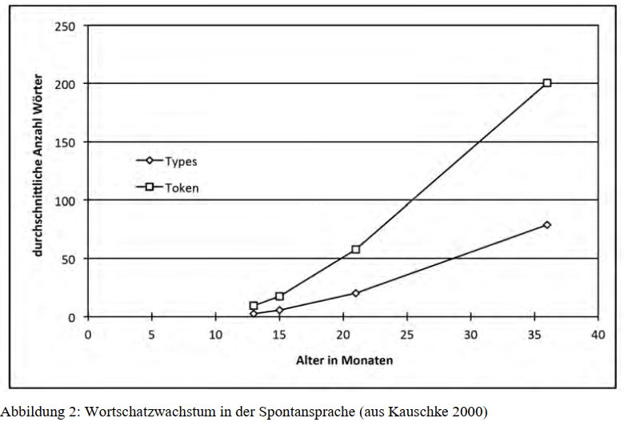
In einer einflussreichen Studie wiesen Goldfield und Reznick (1990) jedoch nach, dass ein abruptes Vokabularwachstum nicht bei allen Kindern zu beobachten ist. In ihrer Studie fanden sich sowohl 13 Kinder, die ihr Lexikon sprunghaft erweiterten als auch fünf Kinder mit einem graduellen Anstieg des Wortschatzes bis auf 99 Wörter.
Zusammengefasst konnten in empirischen Studien bislang verschiedene Zuwachsmuster an Einzelfällen oder Gruppen belegt werden:
- Ein schnelles und sprunghaftes Anwachsen (z.B. Goldfield & Reznick 1990, Bloom 1993, Robinson & Mervis 1998, Dromi 1999),
- ein treppenförmiges Muster mit mehreren kleinen Sprüngen zu verschiedenen Zeitpunkten (z.B. Clark 1993, Anisfield et al. 1998), eine ausgedehnte Spurtphase (Goldfield & Reznick 1990),
- eine exponentielle Wachstumskurve (z.B. Bates et al. 1995, Kauschke & Hofmeister 2002),
- ein graduelles, lineares Wachstum (z.B. Goldfield & Reznick 1990, Bloom 1993, Fenson et al. 1994)
- oder ein ein abwechselnder Verlauf von mehr oder weniger ausgedehnten Spurtintervallen und Plateaus (z.B. Menyuk et al. 1995, Goldfield & Reznick 1996, Robinson & Mervis 1998).
Diese unterschiedlichen Befunde sprechen dafür, dass es eine große Variation hinsichtlich der Wachstumsmuster des Lexikon gibt, die zum Teil sicherlich auf unterschiedliche Erhebungs- und Auswertungsmethoden zurückzuführen ist. Je länger das Intervall zwischen den Messzeitpunkten ist, umso deutlicher sichtbar können Veränderungen der Erwerbsgeschwindigkeit hervortreten.
Goldfield und Reznick (1996) weisen darauf hin, dass selbst die von ihnen untersuchten Kinder mit graduellem Verlauf kurze Spurtintervalle gefolgt von längeren Plateauphasen mit einem langsamen Zuwachs zeigten. Über den gesamten Untersuchungszeitraum hinweg hatten diese Kinder jedoch ein eher inkrementelles als abrupt verändertes Wachstumsmuster. Dies bringt die Autoren zu der Vermutung, dass alle Kinder während ihrer Lexikonentwicklung sowohl sprunghafte als auch graduelle Perioden durchlaufen. (Kauschke 2012:)
Allerdings wird das Vorliegen eines Vokabularspurts in einigen neueren, mathematisch motivierten Ansätzen gänzlich in Frage gestellt.
Ganger und Brent (2004) kritisieren die methodischen Kriterien, nach denen in den meisten der oben genannten Studien ein Vokabularspurt identifiziert wurde, als unzureichend. Bei einem echten Spurt müsse ein klarer Umschlagpunkt ausgemacht werden, der die langsame Lernphase deutlich von der folgenden schnelleren abgrenzt. Mit Hilfe einer neuen Berechnungsprozedur, die diesen Umschlagpunkt erfassen kann, wurden Daten von 20 Kindern ausgewertet und darüber hinaus die Daten von Goldfield und Reznick (1990) sowie die Einzelfalldaten von Dromi (1987) reanalysiert. Es stellte sich heraus, dass nur zwei der 13 Fälle, die von Goldfield und Reznick (1990) als Kinder mit Vokabularspurt klassifiziert wurden, die strengeren Kriterien erfüllten; ebenso wenig bestätigte sich der Spurt für das von Dromi beschriebene Kind. Aus ihren Ergebnissen folgern die Autoren, dass nur bei etwa einem Fünftel aller Kinder überhaupt ein Spurtmuster im Lexikonerwerb vorliege.
Auch McMurray und andere (McMurray 2007, Mitchell & McMurray 2008) bezweifeln das Konstrukt des Vokabularspurts und werten die vermeintliche Beschleunigung als mathematische Konsequenz der Tatsache, dass zahlreiche Wörter mit unterschiedlichem Schwierigkeitsgrad parallel gelernt werden müssen. Über Simulationsmodelle wurde nachgewiesen, dass sich ein sprunghafter Anstieg als statistisch erwartbares Nebenprodukt der Lernaufgabe ergeben kann. Folglich wird dem Vokabularspurt auch keine besondere Qualität im Entwicklungsprozess zugesprochen.
Angesichts der Diskussion schlagen Mayor und Plunkett (2010) eine mildere Definition vor:
Der Vokabularspurt ist durch ein supralineares lexikalisches Wachstum gekennzeichnet, d.h. auf eine Phase des langsamen Lernens folgt eine beschleunigte Lernrate. Ein eindeutiger Umschlagpunkt muss dafür nicht unbedingt auszumachen sein, lediglich ein Wachstum, das schneller als linear ist. (Kauschke 2012:)
Das Vorliegen von – wie auch immer im Detail gearteten – spurtähnlichen Verläufen führte zu der Sichtweise, dass das Wortlernen vor und nach dem Vokabularspurt von qualitativ andersartigen Mechanismen gesteuert wird (Nazzi & Bertoncini 2003), d.h., dass ein neuer Modus des Wortlernens einsetzt, der den rapiden Neuerwerb von Wörtern auslöst. Geht man davon aus, dass das Phänomen eines supralinearen Wortschatzwachstums existiert und dass der Spurt tatsächlich eine qualitative Veränderung der Lernkapazitäten reflektiert, so muss erklärt werden, welche neuartige Fähigkeit zu diesem Umschwung führt. (Kauschke 2012:)
8.1.5 Morphosyntaktische Entwicklung
Das auffallendste äußerliche Merkmal der Entwicklung syntaktischen Wissens durch das Kind ist, dass seine Äußerungen im Lauf der Zeit von einem Jahr bis 6 Jahre länger werden, indem sie zunehmend mehr Wörter enthalten. Die Länge der Äußerung wird durch Mittlung der Zahl der Wörter aus den Äußerungen des zu charakterisierenden Zeitintervalls bestimmt und als MLU (mean length of utterance) häufig zur Bezeichnung von Stadien des Spracherwerbs verwendet. (Dietrich 2016: 84)
Mean length of utterance (MLU) ist ein Index für die durchschnittliche Anzahl der Wörter / Morpheme pro Äußerung in einem vordefinierten Zeitintervall.
Einwortphase: Gegen Ende des ersten Jahres und über die Zeit des vorsyntaktischen Wortschatzerwerbs sind Einwortäußerungen des Kindes zu beobachten, zum Beispiel wauwau, mieze, weg, auf, mehr, auch, da, nein (Belege aus Stern/Stern 1920; Miller 1976). (Dietrich 2016: 84)
Ausgedrückt werden mit diesen Äußerungen meist Wünsche und Feststellungen. Sprachlich ausgedrückt ist zumeist der Bezug auf Dinge oder Personen, Orte oder Zielorte, seltener Umstände von Aktionen und die Verneinung.
Direkte Bezeichnungen von Vorgängen durch Verben sind selten. Sofern sie belegt sind, weist das Verb, soweit erkennbar, die Infinitivform auf, die Nomina ebenfalls eine nominativähnliche SingularGrundform, Adjektive die prädikative, unflektierte Form, wie etwa heiß.
Mehrwortäußerungen bilden in dieser Zeit die Ausnahme und scheinen vom Kind als feste zusammenhängende Formeln gespeichert und eingesetzt zu sein.
Syntaxwissen im engeren Sinne lässt sich den Äußerungen des Kindes nicht entnehmen, weil eben keine Verknüpfungen stattfinden. Zwischen produziertem und vorhandenem muss wiederum Wissen unterschieden werden (vgl. Höhle/Weissenborn 1999). (Dietrich 2016: 85)
Zweiwortphase: Auf die Einwortphase des Syntaxerwerbs folgt die Zweiwortphase, die etwa die zweite Hälfte des zweiten Lebensjahres dauert (1;6 bis 2).
Gekennzeichnet ist diese Phase durch folgende Beobachtungen (Ka=Kaltenbacher, 1990; El=Elsen, 1999):
- Ausgedrückt werden weiterhin Feststellungen, dass etwas so oder so ist, zunehmend nun aber auch Hinweise und Kommentare, dass sich nun etwas geändert hat.
- Nomina sind zahlenmäßig immer noch dominant, es treten, wie vereinzelt schon in der Einwortphase, formelhafte Pluralformen auf, wie z. B. schuhe putt. (Ka: 1;10).
- Die nominale Gruppe weist nur selten Artikel auf, wenn, dann in einer unflektierten Grundform den definiten und zwar nur im Singular, wie z. B. de uwe auch … [… hat eine Brille] (Ka: 1;8).
- Mills (1985) berichtet über Adjektivbelege in attributiver Position, großes Loch, die schon Ansätze von Genusflexion aufweisen.
- In Nomen-Verb-Äußerungen stehen – agentivisch wie patientivisch – Nomen voran: mama esse. [Aufforderung, Mama soll …]. Ka: 1;7 oder schuhe auszieh. [Feststellung] (vgl. Kaltenbacher 1990, S. 80).
- Ebenfalls in dieser Phase erscheinen Partizipialformen des Verbs, allerdings ohne temporale Bedeutung.
- Fragen werden mit Fragewort, am häufigsten zunächst was, ausgedrückt, aber auch weiterhin intonatorisch,
- Verneinung mit dem holophrastischen nein, z. B., nein Brille. [zu einem Mann, der keine Brille trägt]. El: 1;3.
- Die holophrastische Form wird noch in der Zweiwortphase durch Auftauchen von nicht abgelöst, z. B., naIn bot niç. <nein. Brot nicht>. [Sie will das Brot nicht] El: 1;6; (vgl. Elsen 1999, S. 87).
- Die syntaktischen Ausdrucksmittel des Kindes beschränken sich in der Zweiwortphase auf die Wahl der Wortarten der beteiligten Wörter und deren Stellung in der Äußerung. Eine rein auf Distribution gerichtete Analyse englischer Daten hat Braine (1963) vorgenommen und aus ihr abgeleitet, das Kind verfüge in dieser Zeit über zwei Hauptwortklassen (open class words und pivot words) und die entsprechenden Kombinationsregeln. Mit zunehmender Datendichte ist allerdings zweifelhaft geworden, ob die Pivotphase einen eigenen abgrenzbaren Abschnitt in der Syntaxentwicklung darstellt.
- Die mit den Mitteln von Zweiwortsätzen ausdrückbaren Sprechhandlungen und Bedeutungsstrukturen sind sehr vielfältig (vgl. Kaltenbacher 1990; Elsen 1999).
(Dietrich 2016: 86)
Die Drei- und Mehrwortphase folgt der Zweiwortphase und sie dauert etwa von 2 bis 4 Jahre.
Beobachtungen zeigen (Tr = Tracy 1991):
- innerhalb der nominalen Gruppe treten häufiger Artikelformen auf (auch indefinite, nach Genus korrekt flektiert).
- In maskulinen NPs erscheint die Nominativ- und Akkusativmarkierung, Dativ ab dem dritten Jahr.
- Personalpronomen der ersten und zweiten Person Singular sind in der zweiten Hälfte des dritten Jahres belegt, darunter auch deklinierte.
- Subjekt-Verb-Kongruenz ist durch Person- und Numerusmarkierung am Verb ausgedrückt. Daneben stehen auch noch unflektierte Sätze wie: julia eis essen (Tr: 2;0)
- Die finite Verbform nimmt die Zweitposition im Satz ein, eine Entwicklung, die im Zusammenhang mit der Theoriediskussion viel Beachtung gefunden hat (s. Kap. 3.5). Zum Beispiel: da falln jetzt i blätter runter (Tr 2;2); das weint (Tr 2.0).
(Dietrich 2016: 86)
Finitheit: Im dritten Jahr ist die Vergangenheitsflexion des Verbs zunehmend belegt, die Formen unregelmäßiger Verben werden allerdings vielfach in Übergeneralisierung der regelmäßigen Konjugation schwach gebildet, gegeht, stehlten. Belegt ist auch ein Präsens lauft als 3. Person Singular.
Mit Auftreten des Frageworts in der Initialposition ist die Inversion belegt: Die Subjekts-NP steht hinter dem finiten Verbteil, wie z. B. in Was macht die Frau? (El: 2;0). (Dietrich 2016: 86)
Neben Aktivsätzen treten gegen Ende dieser Phase Passivkonstruktionen auf; nach Mills (1985) fast durchweg ohne Nennung des Agens-Referenten.
Es treten die ersten komplexen Sätze auf; nach Mills (1985) zunächst Relativsätze (vgl. allerdings das reichhaltige Repertoire von Konditionalsätzen in Elsen 1999, S. 145 ff.).
In der Folgezeit stabilisieren sich die zuvor kritischen Formen, die unregelmäßigen Flexionsformen von Verben lösen die übergeneralisierten schwachen Formen ab, komplexe Verbformen mit Auxiliar – zunächst mehr haben als sein – und Modalverben treten auf.
Der Formenreichtum der Artikelwörter nimmt zu (Possessiv-Artikel), ebenso das Repertoire anderer Funktionswörter, besonders der Präpositionen und der subordinierenden Konjunktionen.
Die Wortstellung in komplexen Nebensätzen weist bis ins Alter von fünf Jahren Abweichungen auf, ebenso vor- und nachzeitige Tempusformen des Verbs. Bei der Beurteilung dieser Phänomene ist allerdings zu berücksichtigen, dass sie auch in der Erwachsenensprache belegt sind. (Dietrich 2016: 86)
Artikelerwerb von sechs Kindern des Szagun-Korpus
- Beschreiben Sie den Erwerb deutscher d-Wörter, die zunächst wie Demonstrativpronomen auf ein außersprachliches Objekt verweisen, dann aber ab einem bestimmten Alter mit einem Nomen auftreten und dann die im Deutschen typische Artikelfunktion ausüben (d.h. Verweis auf bekannte oder zumindest identifizierbare Objekte in Situation und/oder Kontext)!
8.1.6 Entwicklung der Wortarten
Zum Erwerb der Wortarten ausführlicher in Kauschke, Kapitel 5.4 (Kauschke 2012: 60-66).
Abbildung 5 illustriert diese Entwicklung im Deutschen anhand spontansprachlicher Daten von 32 Kindern zu vier Zeitpunkten: Das frühe Lexikon wurde stark von relationalen Wörtern (die auch Partikeln wie AUF enthielten) und interaktiven Wörtern dominiert, deren Anteil anfangs abrupt, dann stetig weiter abnahm. Nomen fanden bis zu 21 Monaten bei den meisten Kindern Einzug in das Lexikon, ihr Anteil wuchs bis zu 21 Monaten deutlich an und nahm anschließend wieder ab. Die Verben wuchsen konstant nach einem eindeutig linearen Muster an, zuletzt zeigte sich ein später Anstieg der Funktionswörter.
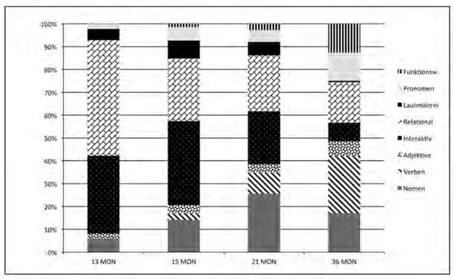
Abbildung 5: Wortartenentwicklung im Deutschen (bezogen auf Types, nach Kauschke 2000, Kauschke & Hofmeister 2002)
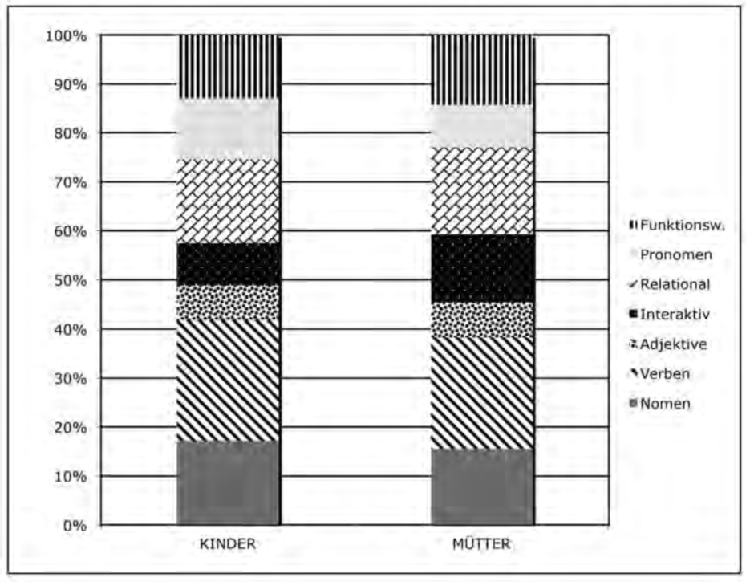
Abbildung 6: Wortartenverteilung im Deutschen bei Kindern und Müttern (bezogen auf Tokens, nach Kauschke & Klann-Delius 2007)
In ihrer Studie glich die Komposition des Lexikons von dreijährigen Kindern der Zusammensetzung bei ihren Müttern stark, bis auf einen Unterschied im Anteil interaktiver Wörter. Gegen Ende des dritten Lebensjahres herrscht in der Spontansprache von Kindern offensichtlich die Wortartenverteilung vor, die sie auch im Input vorfinden. (Kauschke 2012: 62-63)
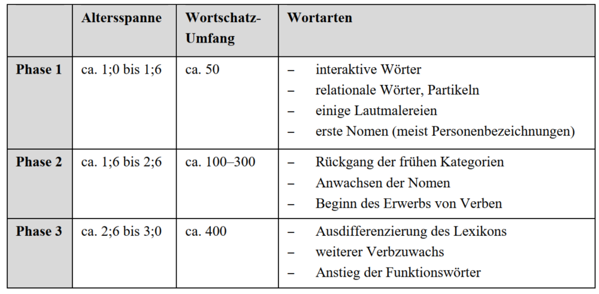
Tabelle 12: Wortartenentwicklung im zweiten und dritten Lebensjahr mit ungefähren Altersangaben
Unabhängig vom genauen Zeitpunkt ihres Erwerbs kommt der Wortart der Verben eine besondere Bedeutung zu, da Verben als Schnittstelle zur Grammatik fungieren.
Inhaltlich beziehen sich Verben auf Handlungen, Ereignisse und Zustände. Zu Beginn des Spracherwerbs erfassen Kinder vor allem die Ereignisstruktur: Wird durch das Verb ein Zustand oder ein Vorgang bezeichnet und impliziert dieser Vorgang das Erreichen eines Endzustandes (wie z.B. bei ›öffnen‹) oder nicht (wie z.B. bei ›fegen‹)?
Anfangs scheinen Kinder endzustandsorientierte Verben zu präferieren (Schulz et al. 2001). Produziert wird in dieser Phase oft noch nicht das gesamte Verb, sondern nur die Partikel, die den erreichten Endzustand anzeigt (AUF für ›aufmachen‹). Diese Verbpartikeln, oben der Wortart der relationalen Wörter zugeordnet, sind damit Vorläufer der Verbproduktion.
Die ersten »echten« Verben sind grundlegend für den Aufbau grammatischer Strukturen. Kontrovers ist, zu welchem Zeitpunkt Kinder Verben als abstrakte grammatische Kategorie erfassen, der bestimmte Eigenschaften und Kombinationsmöglichkeiten inhärent sind. Laut Tomasello (1992) ist dies ein längerer Weg. Verben tauchen zunächst nur in ganz spezifischen, eingeschränkten Kontexten auf, die direkt aus dem Input übernommen werden. Daher bezeichnet Tomasello die ersten Verben als Inseln (verb islands), die für sich stehen und noch keine zugrunde liegende Struktur repräsentieren. Erst nach dem Erwerb einer kritischen Menge können Abstraktionen und syntaktische Schemata entstehen.
Suchen Sie mit Hilfe der CLAN-Werkzeuge FREQ und COMBO in den Gesprächen mit dem Ihnen zugewiesenen Kind nach Belegen, die die phonetisch-phonemische, morphosyntaktische und lexikalische Entwicklung des Kindes illustrieren. Eine Schätzung der Wortklassenanteile ist aus der folgenden Tabelle ablesbar. Wortwolken und einige andere Größen können auch mit Voyant Tools erstellt werden.
8.1.7 Semantische Entwicklung
Ausführlicher dazu in Kauschke, Kapitel 5.3 (Kauschke 2012: 52-60).
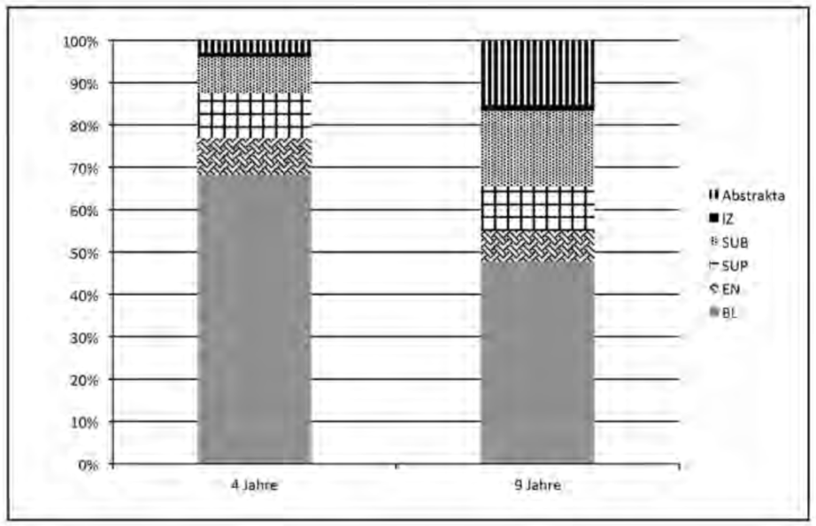
Abbildung 3: Struktur des Nomenlexikons (eine Legende zur Abbildung findet sich in der Tabelle auf der folgenden Seite)
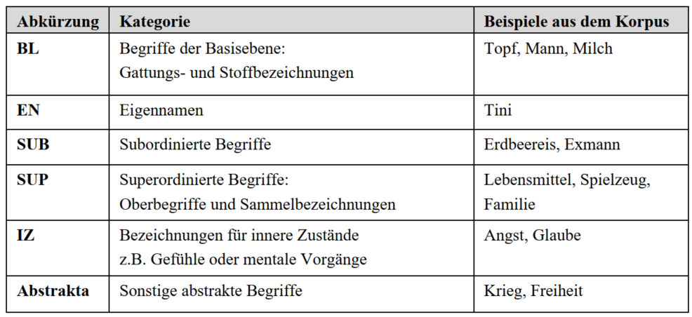
Tabelle 10: Legende zur Abbildung 3
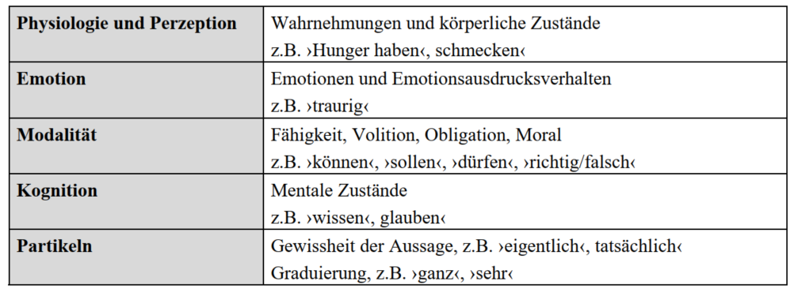
Tabelle 11: Klassifizierung von Ausdrucksweisen innerer Zustände
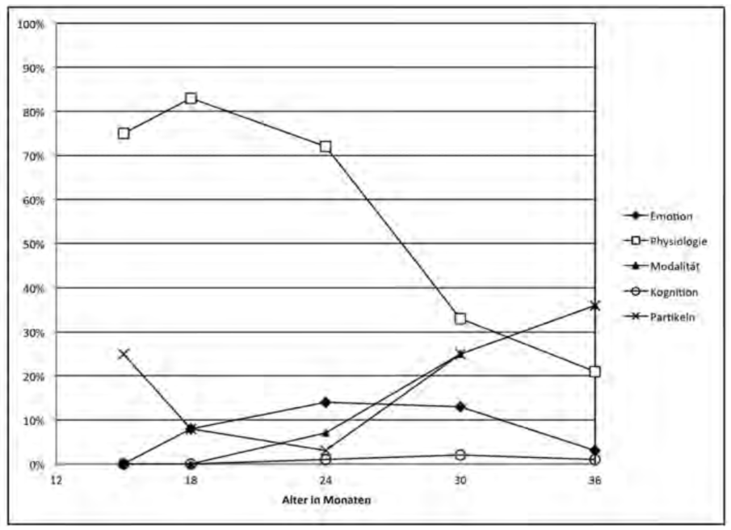
Abbildung 4: Entwicklung von Ausdrucksweisen innerer Zustände